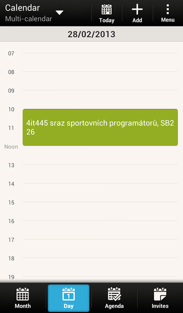

Main purpose of the app is easy access to an information about events arranged by student organizations. After performing the first sync, events are saved into your device and you can browse it offline.
 Main source of the information about events is the Calendar app installed in your device. It can be opened also by button in top bar / menu Open calendar. After performing the first sync, new calendar myEvents is created. All the events are saved there. Usage of the calendar is same like in case of Google or Facebook calendar.
Main screen is also limited source of events information. You can find there an overview of the nearest events. By tapping the event image or name you can get event details opened up in the Calendar app.
By default, all events are subscribed. However you can manage events settings and decide which events you want to subscribe. More information about this can be found at Settings chapter.